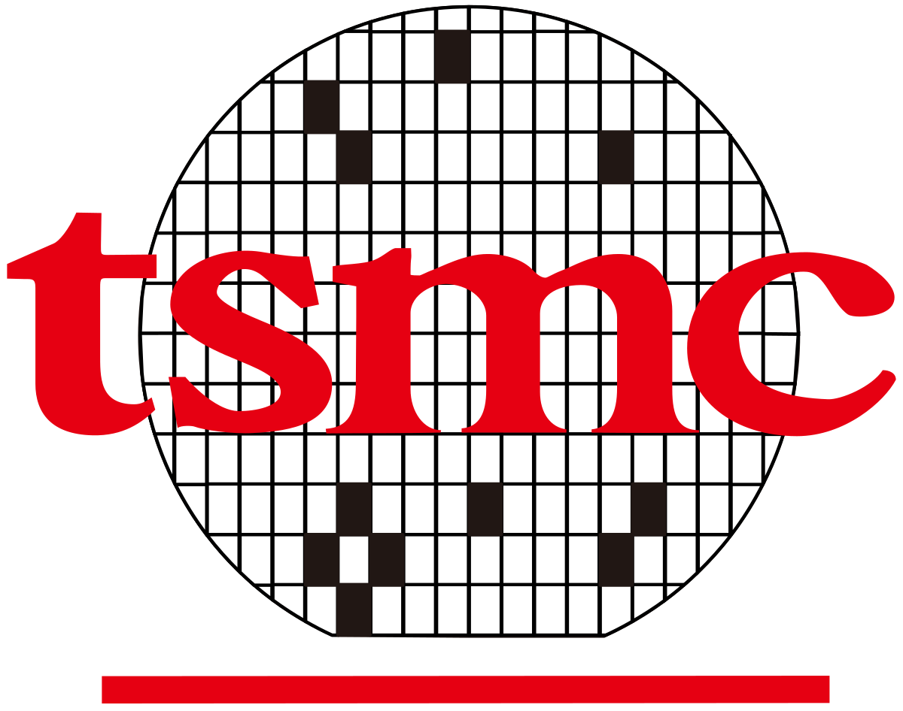

University of California San Diego (UCSD)
Bachelor's Degree in Data Science
~ Present
Contact Information
Bachelor's Degree in Data Science
~ Present
Customer Service Intern ( ~ )
My responsibilities as a intern in the customer service department is to help my seniors perform various tasks, including calculating labor hour per machine (LHM) and production hour per machine (PHM) via excel spreadsheets, troubleshooting and implementing chat bots for better Microsoft Teams communication, and handling various chores and company wide activities.
DNA Internship: Lithography Department ( ~ )
Within the DNA Summer Internship program, every intern is assigned to different designated departments, in which I got into the lithography department in charged of using light sources to create circuit patterns on wafers. During the first three weeks of internship, my fellow senior engineers taught me about the wafer production process, scanner and track machine components, and various innerworkings of the company. At the end , I was tasked to perform a series of experiments to test the viability of High Order Wafer Alignment (HOWA), presenting my results to my manager and colleagues.
